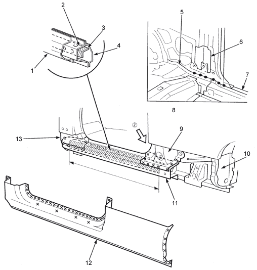

 |
- OUTER PANEL
- SIDE SILL REINFORCEMENT
- REINFORCEMENT STIFFENER (Driver side)
- INSIDE SILL
- INSIDE SILL EXTENSION
- CENTRE INNER PILLAR
- SIDE SILL REINFORCEMENT
- VIEW (Z)
- CENTRE PILLAR STIFFENER LOWER
- WHEEL ARCH EXTENSION
- SIDE SILL REINFORCEMENT
- OUTER PANEL
- FRONT PILLAR LOWER STIFFENER
|